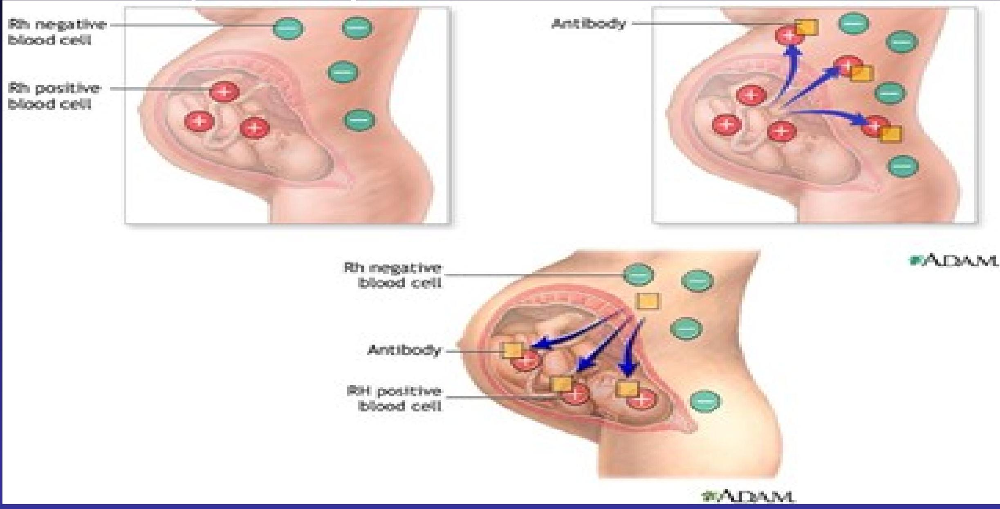
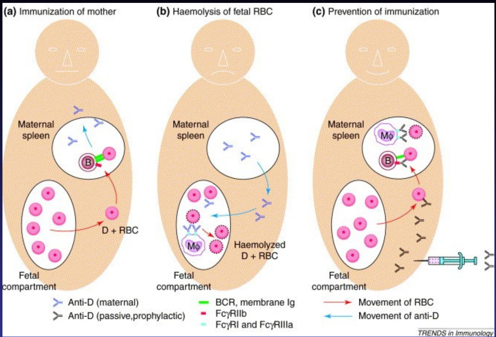

Pathological Jaundice
PATHOLOGICAL Unconjugated hyperbilirubinemia
- $\uparrow$ bilirubin load metabolized by liver
- Damaged/ $\downarrow$ transferase enzyme activity
- Competition and blocking transferase enzyme
$\uparrow$ bilirubin load
A) Hemolytic anemia
- -immune-
- Rhesus isoimmunization
- Most severe degree of hyperbilirubinaemia
- First baby is not affected
- Develops within the first few hours of life
- Rise of bilirubin occur rapidly within 48 hours
- Cholestasis may occur due to congestion of the liver from extramedullary erythropoisis, heart failure and from tissue hypoxia due to decreased blood supply and anaemia
- High risk of encephalopathy
- RX-phototherapy,exchange transfusion,anti D to mother
Scenario 2
Pathological Jaundice Secondary to Rh Incompatability
 - ABO incompatibility
- Milder and more brief
- Rarely causes kernicterus
- Occur even in first born
- Common in blood group O mother and group A baby
- Inheritable -
- RBC membrane defects
- e.g hereditary spherocytosis,elliptocytosis
- RBC enzyme deficiences
- glucose 6 phosphate deficiencies,pyruvate kinase deficiency
- hemoglobinophathies
- RBC membrane defects
- Others
- Sepsis-infection increases RBC destruction and hepatocellular damage
- Extravasation of blood-hematoma, pulmonary haemorrage -this slows bilirubin release as macrophages gradually converts heme to bilirubin
в) increased enterohepatic circulation
- Breast milk jaundice
- develops in an estimated 2% of breastfed term infants
- after the 7th day of life, with maximal concentrations as high as $10-30 \mathrm{mg} / \mathrm{dL}$
- reached during the $2 \mathrm{nd}-3 \mathrm{rd}$ week.
- If breast-feeding is continued, the bilirubin gradually decreases
- may persist for $3-10 \mathrm{wk}$ at lower levels.
- Phototherapy may be of benefit.
- etiology of breast-milk jaundice is not entirely clear
- may be attributed to the presence of glucuronidase in some breast milk.
- Breastfeeding jaundice
- occur in the 1st week of life
- Hyperbilirubinemia ($>12 \mathrm{mg} / \mathrm{dL}$) develops in 13% of breast-fed infants in the 1st wk of life
Aetiology
- may be due to
- decreased milk intake with dehydration
- and/or reduced caloric intake.
- Giving supplements of glucose water to breast-fed infants is associated with higher bilirubin levels,
- in part because of reduced intake of the higher caloric density of breast milk.
- Frequent breast-feeding ($>10 / 24 \mathrm{hr}$)
- rooming-in with night feeding
- discouraging 5% dextrose or water supplementation
- lactation support
* Gourley, GR, Arend, RA. beta-Glucuronidase and hyperbilirubinaemia in breast-fed and formula-fed babies. Lancet 1986; 1:644.
- Intestinal disorders-
- Pyloric stenosis
- Small or large bowel obstruction
- Reduces clearance of bilirubin due to increased enterohepatic circulation
- If nursing is discontinued, the serum bilirubin level falls rapidly, reaching normal levels within a few days.
- With resumption of breast-feeding, bilirubin levels seldom
C) decreased clearance
- prematurity
- congenital atresia of the bile ducts.
- Jaundice persisting for more than 2 wk
- associated with acholic stools and dark urine
- inspissated bile syndrome.
D) Metabolic disorders
- Hypothyroidism- prolonged jaundice occurs in $10 \%$ of cases
- Results from depressed metabolism or dependance of maturition of hepatic pathways on thyroxine
- Hypopituitarism
E) In born errors of metabolism galactosemia tyrosinemia
Damaged / $\downarrow$ transferase enzyme activity
- Genetic deficiencies $\rightarrow$ absent /deficient enzymes
Genetic
1. Familial disorders of conjugation e.g.
-
Gilbert's syndrome-
- affect enzyme encoding
- autosomal dominant and recessive
- Usually mild
-
Criglar-Nagger I-
- inherited
- Autosomal recessive
- Infants have a complete absence of UDPGT
- Develop severe jaundice
- RX liver transplant
-
Crigler najjar type ii
- Autosomal dominant
- Less severe
- Neonates with reduced enzyme activity
- Respond to phenobarbitone
- Enzymatic defects-G6PD;pyruvate kinase;hexokinase; congenital erythropoietic porphyria
- Erythrocyte structural defects-spherocytes;elliptocytes
- Hypoxia
- Hypothermia-decreased enzyme activity
Competition and blocking transferase enzyme
- Drugs and other substances requiring glucuronic acid oxidation